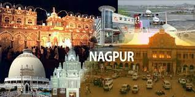
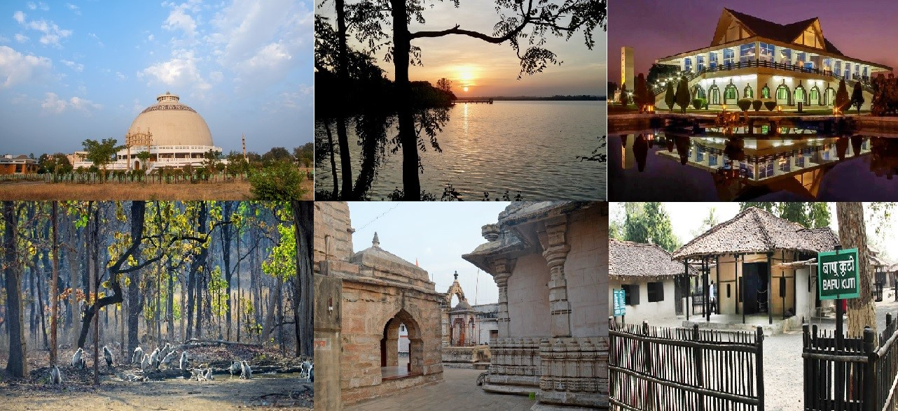

ABOUT
Nagpur, popularly known as the ‘Orange City’, is one of the fastest growing metropolis and the third largest city after Mumbai and Pune in Maharashtra. The city is located on the eastern part of the state and is the geographical ‘center’ of India (country’s ‘Zero-Milestone’ is located here).
Since ages, it has been a city of cultural and political importance. As far as roads, railways and air-flights are concerned, the city is well connected and well served to all the major cities of India.
There are many aspects to Nagpur city that indicate that the city is growing in terms of business, education, industry, manufacturing and research. As per media reports, Nagpur is already the 11th most competitive city for investment and has got an advantageous geographical location.

Nagpur also has a rich history which can be traced back to 8th century BC. Considering the recent history, the city completed 300 years of establishment in the year 2002.
It is worth mentioning that the MIHAN is the biggest project of its type concerning economic investments. Interestingly, MIHAN has a Maintenance, Repair and Overhaul facility constructed by Boeing and it is the second such facility in the world after Shanghai.
Also, the city is counted among the most secure cities of the country; and hence, India’s majority gold asset is kept in Nagpur’s Branch of Reserve Bank of India.
The city is taking sturdy steps towards growth and development.
